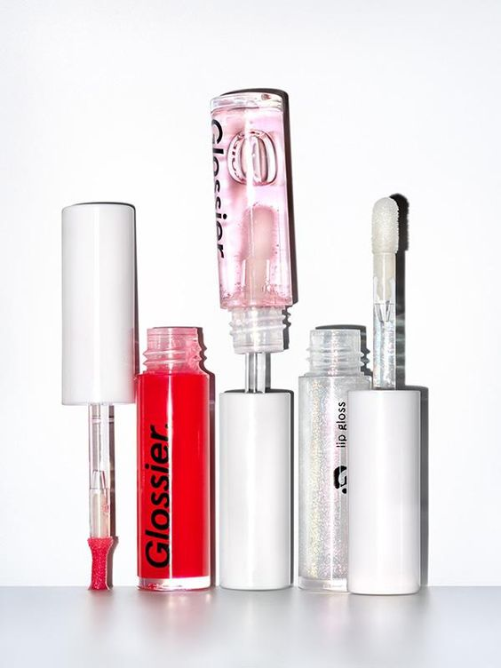
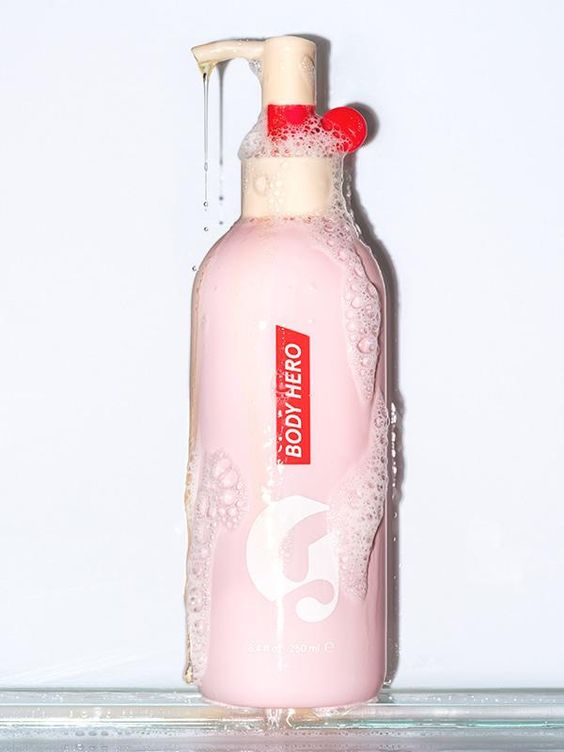
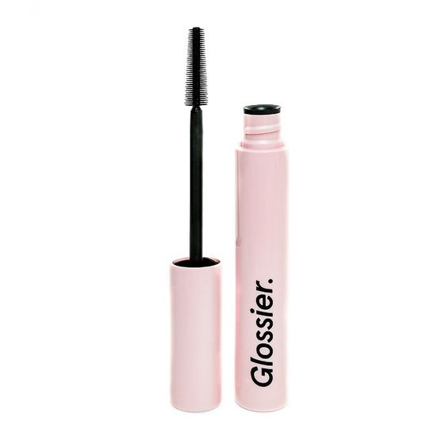
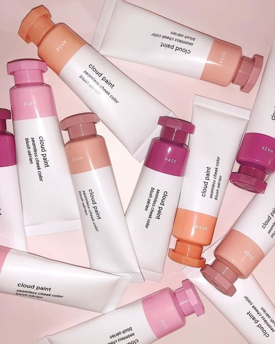
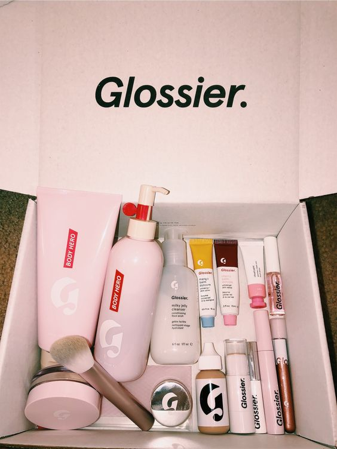
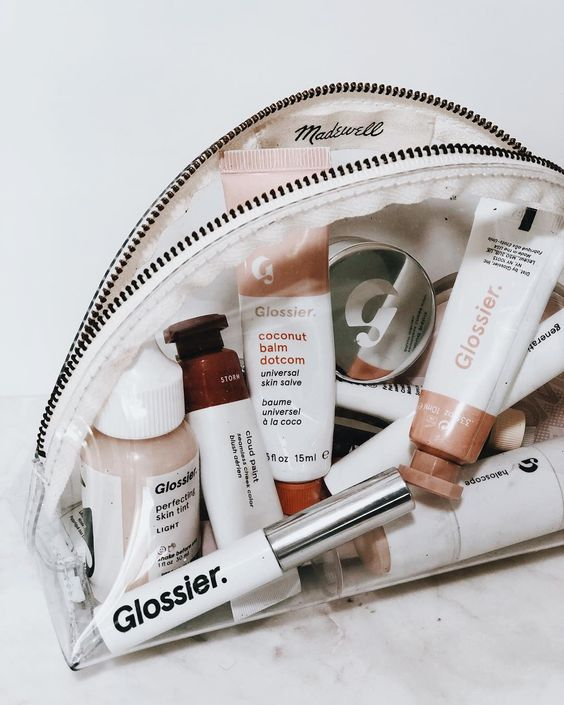

Skin Care
Proper skin care is important because our skin is the largest barrier against infection that we have. Keeping our skin healthy and moist helps keep this barrier strong. When the skin gets dry or irritated by harsh soaps, cracks in the skin can occur. Cracks in the skin make a person more prone to infection.
Glossier takes skin care very seriously. Like they always say, "skin first, make-up second." Glossier has profected their skin care products for all skin types, making everything extremely easy and gentle to use. At glossier, the ideology is
that your skin is the makeup you wear everyday, so taking good care of it is the most crucial step in your daily routine.
Favorite Products:
Below I listed a few of my holy grail products. Literally. They are my favorite
products that Glossier makes, and never fail to make my skin glowy and look
fresh.
I swear by these products and recommend them to anyone looking to add new
products into their daily skin regime.
- Lip Gloss - $12 
- Body Hero - $23 
- Lash Slick - $19 
- Cloud Paint - $15 
Environmentally Friendly!
In today's fast past world, the topic of environmental awareness and consciousness seems hotter than ever. It is crucial for us as individuals to contribute to our planet and help revert the consequences that we have had to suffer because of others' actions. Glossier capitalizes on eco-friendliness, and strives to create a balance between nature and beauty. Glossier makes a conscious effort to be as ecofriendly as possible. This is why it is super important for glossier to use all natural ingredients in their products as well as being animal-cruelty free. Glossier is also sulfate free, parabin free, hypoallergenic, (sometimes) fragrance free, and vegan company. The products are all dermatologist (and sometimes gynocologist) tested to ensure that the safety of the products live up to the highest standards.
Make Up
Fun fact: Glossier's first product to ever be made was the lip gloss!
From smooth skin tints that add the lightest layer of coverage to creamy blushes that give your cheeks that just-pinched flush, Glossier boasts a suite of barely-there skin-care and beauty products made to accentuate your natural beauty. If you're looking to get that dewy glow, Glossier may be your new go-to.
Glossier is not only known for it's amazing skincare, but for its lightweight and simple makeup products. The brand emphasizes the importance of enhancing people's natural beauty, not hiding it behind generous amounts of thick and cakey product. So, glossier has designed numerous makeup products that are gentle on the skin yet impactful.
